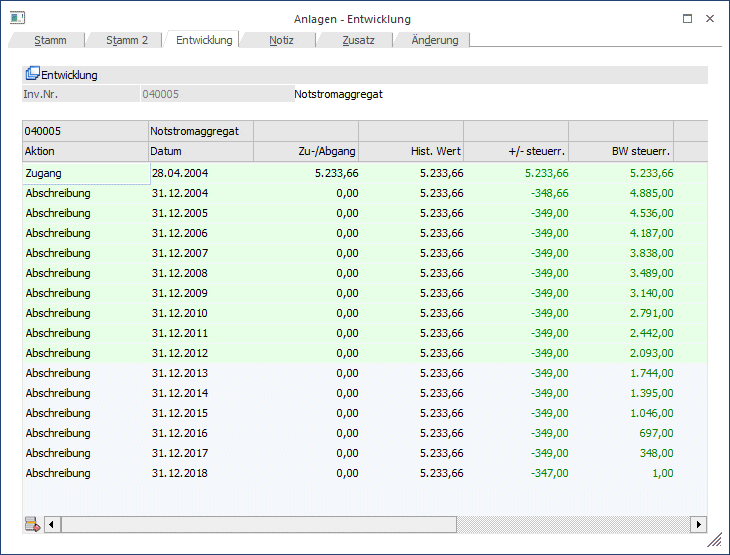

Im Fenster "Entwicklung" ist jederzeit die komplette Historie der aktuell aufgerufenen Anlage ersichtlich. Tatsächlich bedeutet das, dass in den Anlagenstamm nicht nur ein bestimmter Zeitpunkt X abgespeichert ist und nur einen gewissen Blick auf einen ganz konkreten Zeitpunkt im Leben der Anlage zulässt, sondern dass jederzeit jeder beliebige Zeitpunkt der gesamten Nutzungsdauer eingesehen werden kann (wann hatte oder wird die Anlage welchen Buchwert haben, usw.).
Damit ist es auch möglich, jederzeit für jedes beliebige Wirtschaftsjahr das Anlagenverzeichnis mit historischem, steuerrechtlichen und handelsrechtlichen Betrag und Stand auszugeben, da das gesamte Anlagenjournal mit sämtlichen Informationen über alle Jahre immer zur Verfügung steht. So man kann z.B. im Jahr 2013 jederzeit nicht nur den Stand per Ende 2013 ausgeben, sondern genauso auch für 2010, 2016, 2014, 2007, 2005, etc.

Auch hier ermöglicht Ihnen die VCR-Buttonleiste ein einfaches Blättern durch die Anlagen, ohne das aktuelle Register verlassen zu müssen.
Hinweis
Wird bei einem Wirtschaftsgut anstelle der Jahresabschreibung eine außerordentliche Abschreibung durchgeführt, so wird die entsprechende Zeile in der Tabelle mit "A.o. Abschreibung" gekennzeichnet.
Hinweis
Ein neu erfasstes Anlagegut wird automatisch abgespeichert, wenn in das Register Entwicklung gewechselt wird. Es kommt jetzt der entsprechende Hinweis.